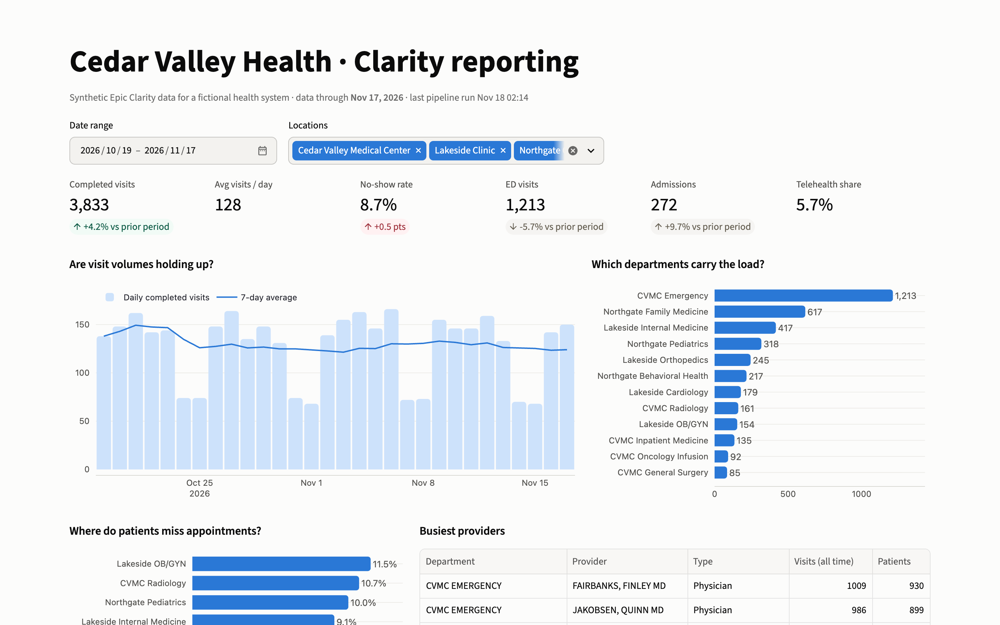

01 Data engineering · BI
Self-healing Epic Clarity ETL
The problemNightly Clarity copies break at 2 AM: a truncated file, a column Epic added overnight. Reports go stale, and loading bad data is worse than loading none.
Questions it answers
- Did last night's load land, and if not, exactly why?
- Can the pipeline fix itself when a file is damaged in transit?
- How old is our A/R, and which payers deny most?
- Are visit volumes and no-shows holding up by department?
~80checks per night
4 minto self-heal a damaged file
0half-loaded nights
4audiences on one dashboard
PythonSQL ServerSQLAlchemySFTPPlotlyDockerGitHub Actions
clarity-agentic-etl · dashboard
